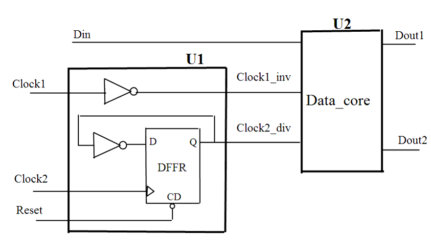

| Description | This rule verifies that all generated clocks are generated in a single structure with a single clock input. |
| Policy | DESIGN |
| Ruleset | CLOCKS |
| Language | VHDL/Verilog |
| Type | Hardware |
| Severity | Error |
This is an example of invalid Verilog code, followed by a circuit diagram that illustrates the problem:
module ntl_clk09_top (Clock1, Clock2, Reset, Din, Dout1,Dout2 );
input Clock1, Clock2, Reset, Din;
output Dout1, Dout2;
wire Clock1_inv, Clock2_div;
//NTL_CLK09 fires because generated clocks from one module driven by two
//clocks
Clk_gen U1( .Clock1(Clock1), .Clock2(Clock2), .Reset(Reset),
.Clock1_inv(Clock1_inv), .Clock2_div(Clock2_div));
//Data_core - design core module
Date_core U2 ( .Clock1(Clock1_inv), .Clock2(Clock2_div), .Reset(Reset),
.Din(Din), .Dout1(Dout1), .Dout2(Dout2) );
endmodule
module Clk_gen ( Clock1, Clock2, Reset, Clock1_inv, Clock2_div );
input Clock1, Clock2, Reset;
output Clock1_inv,output Clock2_div;
wire Clock1_inv;
reg Clock2_div;
assign Clock1_inv = ~Clock1 ;
always @(posedge Clock2)
begin
if (!Reset)
Clock2_div <= 0;
else Clock2_div <= ~Clock2_div;
end
endmodule
